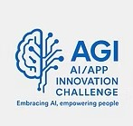

📢 Inscripción: Haz clic aquí
📢 Fecha límite de entrega: 21 de septiembre de 2025
📢 Anuncio de finalistas: 24 de septiembre de 2025
📢 Presentaciones finales y evaluación: 27 de septiembre de 2025
Detalles del evento: 27 de septiembre de 2025
Patrocinado por importantes organizaciones de EE. UU. y empresas líderes de IA, este evento recibe a estudiantes de 6.º a 12.º grado de todo el mundo — incluidos Taiwán, Malasia, Singapur, Canadá, México, Estados Unidos y más allá
Los estudiantes desarrollarán aplicaciones con IA que aborden desafíos del mundo real en diversas industrias. A lo largo de este recorrido, los participantes obtendrán experiencia práctica, recibirán mentoría de profesionales de la IA y presentarán sus proyectos innovadores ante destacados jueces de la industria. Y lo más importante: aprenderán a usar la IA para fortalecer comunidades, proteger nuestro mundo, empoderar a las futuras generaciones y llevar esperanza a quienes más la necesitan.
Categorías de la competencia:
🔹 IA para el servicio comunitario
Crea soluciones de IA que fortalezcan la participación cívica, mejoren el gobierno local, apoyen la respuesta ante desastres y aumenten la seguridad pública.
🔹 IA para los servicios de salud
Desarrolla aplicaciones de IA que impulsen el diagnóstico médico, el apoyo a la salud mental, la prevención de enfermedades y el acceso a la atención médica.
🔹 IA para el medio ambiente
Diseña innovaciones impulsadas por IA para enfrentar desafíos ambientales como el cambio climático, la conservación, la energía limpia y la sostenibilidad.
🔹 IA para la educación global
Construye herramientas de IA que hagan la educación más accesible, equitativa y personalizada para estudiantes de todo el mundo.
🔹 IA para la próxima generación
Crea soluciones de IA que empoderen a los jóvenes con conocimientos, habilidades de liderazgo y oportunidades para construir un futuro mejor.
🔹 IA para las familias
Desarrolla innovaciones de IA que fortalezcan las relaciones familiares, apoyen la crianza, promuevan el bienestar del hogar y enriquezcan la vida familiar.
🔹 IA para adultos mayores y jóvenes
Diseña herramientas de IA que promuevan la mentoría intergeneracional, el aprendizaje, el cuidado y las conexiones significativas entre personas mayores y jóvenes.
🔹 IA para las personas en desventaja
Construye proyectos de IA enfocados en apoyar a las comunidades marginadas, brindando recursos esenciales a quienes más los necesitan.